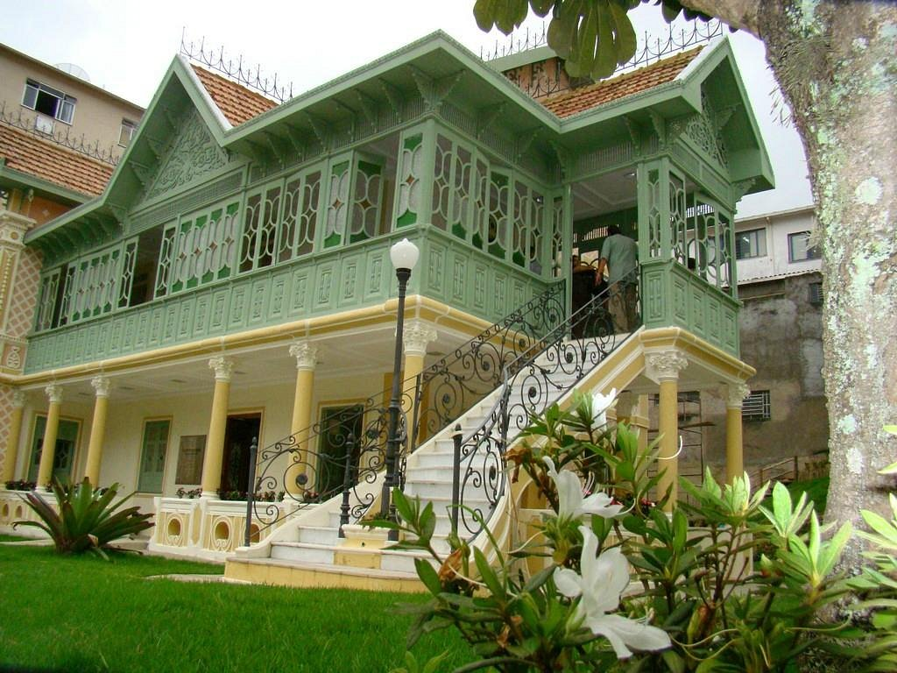

Pontos Turísticos em Teresópolis:
Parque Natural da Serra dos Órgãos:
- O parque tem a maior rede de trilhas do Brasil.
- É um dos melhores locais do país para a prática de esportes de montanha, como escalada, caminhada, rapel e outros; além de ter fantásticas cachoeiras.
- O parque abriga diversas espécies de plantas, aves, mamíferos, anfíbios, répteis, animais ameaçados de extinção e muitas espécies que só ocorrem neste local.

Granja Comary
- Local onde se encontra a sede da CBF.
- Um lindo lago que geralmente tem a presença de diversos animais como patos e seus filhotes, por exemplo.
- Um jardim lindo que proporciona fotos ótimas.

Casa da Memória Arthur Dalmasso
- Um casarão com diversos tipos de exposições antigas históricas.
- Uma grande variedade de rádios, vitrolas, aparelhos telefônicose e móveis antigos em exposição.
- Diversas moedas e cédulas antigas em exposição.
